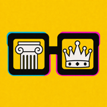

This page exists to put glasses with column + crown lenses on your home screen so you can judge it next to your real apps.
All three will be labelled Yesternerd, so you can tell them apart only by the icon — which is the point. Delete the losers by long-pressing.